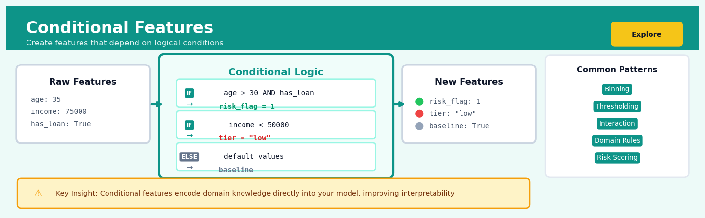
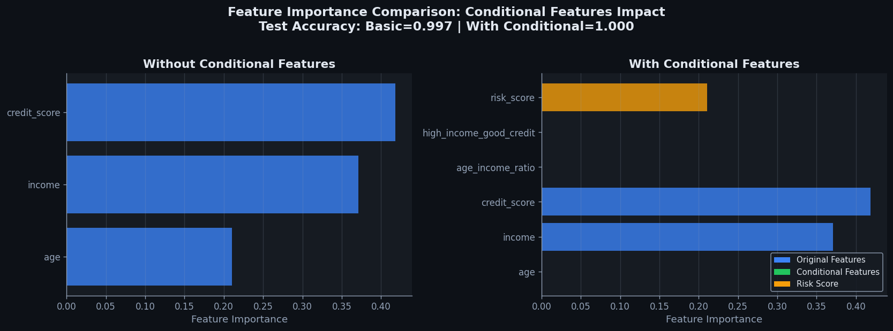
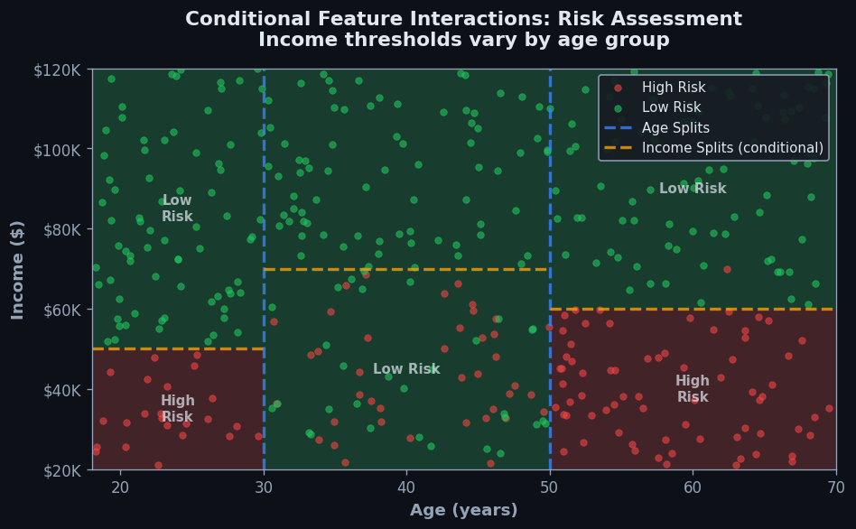

Conditional Features#


The biggest mistake with conditional features is creating them after looking at your test set performance, which leads to subtle data leakage that's hard to detect. Always design your conditional logic based solely on domain expertise or patterns discovered in training data, and treat complex nested conditions as a signal that you might need a decision tree model instead. Remember that every if-else statement you hard-code is a hypothesis about your problem that should be validated, not just an ad-hoc fix for poor model performance.
The 60-Second Version#
What it does: Conditional features create new variables that change their values based on specific business rules or thresholds in your existing data.
When to use it: When different customer segments, contexts, or situations need to be treated differently—like flagging high-value transactions, categorizing age groups, or marking peak shopping hours.
What you get back: New columns that make these distinctions explicit, so your models and analysts can immediately see and act on meaningful business segments without hunting through raw numbers.
At a Glance
Difficulty |
Easy |
Typical runtime |
Seconds on millions of rows |
What you bring |
A dataset and clear business rules about what conditions matter |
What you get |
New columns encoding those rules as flags, categories, or computed values |
Heuristix bucket |
Explore — Shaping & Transforming Data |
Conditional features only work as well as the rules you define—garbage logic creates garbage features that will mislead every analysis downstream.
Learning Objectives#
After reading this chapter, a business user will be able to:
Identify situations where customer behavior, risk profiles, or operational rules differ across segments and would benefit from conditional feature encoding rather than universal transformations.
Interpret conditional feature outputs by explaining which business rules triggered specific feature values and how these relate to observable patterns in stakeholder-facing reports.
Decide whether to refine existing business rules or create new conditional segments based on feature importance rankings and performance differences across subgroups.
After reading this chapter, a data scientist will be able to:
Implement conditional features using vectorized operations that correctly handle missing values, overlapping conditions, and hierarchical rule priorities without introducing data leakage.
Tune the granularity of conditional logic by balancing the trade-off between capturing segment-specific patterns and maintaining sufficient sample sizes for statistical reliability.
Validate conditional features by comparing subgroup model performance, detecting underspecified conditions that create unexpected default assignments, and diagnosing when conditional logic masks underlying data quality issues.
Overview#
Conditional features are derived variables whose values depend on logical predicates evaluated against one or more existing columns in a dataset. This technique belongs to the broader family of feature engineering methods within the data transformation pipeline, specifically the class of rule-based feature construction. The core purpose is to encode domain knowledge, segment-specific behaviour, or contextual dependencies directly into the feature space, enabling downstream models to capture heterogeneous relationships that would otherwise require complex interactions or non-linear architectures to learn implicitly.
When to Use This#
Use conditional features when:
Business rules define discrete regimes — Your domain experts know that customer behaviour differs fundamentally between segments (e.g., premium vs. standard tiers), and you want to encode these regime switches explicitly rather than hoping a model discovers them.
Threshold-based transformations are meaningful — A continuous variable has qualitatively different interpretations above or below certain cutoffs (e.g., credit utilisation above 30% signals different risk than below), and you want to capture this non-linearity without relying on tree-based models.
Missing data patterns carry information — The fact that a value is missing is predictive (e.g., customers who decline to provide income information), and you need a feature that captures this missingness pattern alongside imputed values.
Interaction effects are known a priori — You have domain knowledge that the effect of one variable depends on the value of another (e.g., marketing response differs by channel and customer tenure), and you want to construct the interaction explicitly.
Temporal or event-based logic applies — Certain features should only be computed or activated after specific events (e.g., “days since first purchase” is only meaningful for customers who have purchased).
Regulatory or compliance requirements demand transparency — You need interpretable, auditable features that encode specific business logic rather than opaque learned representations.
Data contains mixed populations — Your dataset combines fundamentally different entity types (e.g., individual and corporate customers), and certain features are only applicable to subsets.
Do NOT use conditional features when:
The relationships are unknown — If you do not have strong prior knowledge about where regime changes occur, you risk encoding arbitrary cutoffs that overfit to your training data. Let the model discover structure instead.
High-cardinality conditions fragment your data — Creating conditional features based on many categories results in sparse features that may not generalise and can cause instability in model training.
Continuous relationships are genuinely smooth — Artificially discretising or conditioning on continuous variables can destroy information and introduce boundary artefacts.
Questions This Answers#
Customer Segmentation and Behavior#
Why do customers who place orders over $500 have such different return rates than smaller purchasers?
Should we treat weekend shoppers differently from weekday shoppers in our email campaigns?
Are first-time buyers responding to the same promotions as our repeat customers, or do we need separate strategies?
Why are customers in urban ZIP codes churning at 22% while suburban customers stay loyal?
Do customers who use mobile apps behave fundamentally differently from desktop users when it comes to basket size?
Operational Performance and Risk#
Which loans should we flag for manual review — just the high-dollar ones, or does credit score below 650 change everything?
Are late deliveries in Q4 caused by volume spikes, or is there something different about December orders specifically?
Should we stock inventory differently for stores near universities during summer months versus the academic year?
Why did our conversion rate drop 15% in March — was it the price increase, the seasonal shift, or both working together?
Do claims filed within 30 days of policy purchase need different handling than later claims?
Pricing and Product Strategy#
Should we offer free shipping at different thresholds for new customers versus members who’ve been with us over a year?
Are enterprise contracts over $100K more price-sensitive than mid-market deals, or does industry sector matter more?
Which product bundles actually drive incremental revenue versus just cannibalizing individual sales?
Do promotional discounts work better for products priced under $50, or is it more about the category and customer age group?
How It Works#
Imagine you run a coffee shop and you’re trying to predict how much each customer will spend. You notice that your regular customers who visit on weekends behave completely differently than weekday visitors—they linger longer, order food, and bring friends. Simply knowing “weekend” and “regular customer” separately doesn’t capture this magic combination. So you create a new tag in your system: “weekend_regular.” Now when you look at your data, you can see this specific group’s behavior clearly labeled, and suddenly their spending patterns make perfect sense. You’ve just created a conditional feature—a new label that appears only when certain conditions align.
BEFORE: Original Features CONDITIONAL LOGIC
┌─────────┬──────────┬─────────┐ ┌──────────────────────────┐
│ Day │ Customer │ Spending│ │ IF Day = "Weekend" │
├─────────┼──────────┼─────────┤ │ AND Customer = "VIP" │
│ Weekend │ VIP │ $85 │ │ THEN Flag = "Premium" │
│ Weekday │ VIP │ $42 │ │ ELSE Flag = "Standard" │
│ Weekend │ Regular │ $38 │ └──────────────────────────┘
│ Weekday │ Regular │ $28 │ ↓
└─────────┴──────────┴─────────┘ ↓
↓
AFTER: New Feature Added Pattern Now Visible!
┌─────────┬──────────┬────────────┬─────────┐
│ Day │ Customer │ Segment │ Spending│
├─────────┼──────────┼────────────┼─────────┤
│ Weekend │ VIP │ Premium │ $85 │ ← High spenders
│ Weekday │ VIP │ Standard │ $42 │ ← clearly labeled
│ Weekend │ Regular │ Standard │ $38 │
│ Weekday │ Regular │ Standard │ $28 │
└─────────┴──────────┴────────────┴─────────┘
Step 1: Identify the condition. You start by defining a rule based on your domain knowledge or observed patterns. This might be something like “customers over age thirty who have premium accounts” or “transactions above five hundred dollars made outside business hours.” The rule combines one or more existing columns using logical conditions.
Step 2: Evaluate each row. The system goes through your dataset row by row, checking whether each record satisfies your defined condition. It’s like having an inspector examine each entry with a checklist, marking yes or no.
Step 3: Assign the new value. When a row meets the condition, the new feature gets one value (often something like “Yes,” “High Risk,” or a category name). When it doesn’t meet the condition, it gets a different value (like “No” or “Standard”). You can also create multiple tiers with cascading conditions—if this, then that; else if this other thing, then something else.
Step 4: Create the new column. The results get stored as a brand new column in your dataset, sitting alongside your original features. This new column now explicitly captures the pattern you identified, making it visible and usable.
Step 5: Leverage downstream. Your machine learning model or analysis can now directly use this labeled segment. Instead of having to discover the complex interaction between age, account type, and behavior on its own, the model sees a clear flag pointing to the pattern you knew mattered.
The key insight: Conditional features transform implicit domain knowledge into explicit data columns, allowing models to immediately see and act on patterns that would otherwise remain hidden in complex interactions between raw variables.
The Intuition#
Consider how a seasoned loan officer evaluates credit applications. They do not apply the same mental model uniformly to every applicant. When reviewing a small business owner, they weight cash flow volatility heavily; for a salaried employee, they focus on employment stability. The officer’s decision process is fundamentally conditional — the relevant features and their importance depend on context. Conditional features encode this same logic into your dataset, allowing models to see different “versions” of reality for different subpopulations.
Think of conditional features as switchboard operators for your data. When a record arrives, the conditional logic examines its characteristics and routes specific information to specific feature columns. A customer flagged as “high-value” might have their purchase recency emphasised through a dedicated feature, while standard customers have that information zeroed out or transformed differently. This explicit routing prevents models from having to waste capacity learning these routing rules from data — you provide the structure, and the model focuses on learning the relationships within each regime.
The power of this approach lies in encoding domain expertise directly into the feature space. Machine learning models are exceptional at finding patterns, but they have no inherent understanding of your business. When you know that “discount sensitivity only matters for price-conscious segments” or “equipment age is only relevant after warranty expiration,” conditional features translate this knowledge into a form the model can directly exploit. This typically results in better performance with less data, improved interpretability, and models that behave sensibly in edge cases where pure data-driven approaches might fail.
The Mathematics#
Formal Problem Setup#
Let \(\mathbf{X} \in \mathbb{R}^{n \times p}\) denote a dataset with \(n\) observations and \(p\) features. We denote the \(i\)-th observation as \(\mathbf{x}_i = (x_{i1}, x_{i2}, \ldots, x_{ip})^\top\). A conditional feature \(z_i\) for observation \(i\) is defined as a function:
where:
\(C: \mathbb{R}^p \to \{\text{True}, \text{False}\}\) is a predicate function (the condition)
\(\mathbb{1}[\cdot]\) is the indicator function returning 1 if the argument is true, 0 otherwise
\(f: \mathbb{R}^p \to \mathbb{R}\) is the transformation applied when the condition is true
\(g: \mathbb{R}^p \to \mathbb{R}\) is the transformation applied when the condition is false
Common Predicate Forms#
Simple threshold predicates:
for some feature index \(j\) and threshold \(\tau \in \mathbb{R}\).
Compound predicates using Boolean algebra:
Set membership predicates:
for some set \(\mathcal{S}\) (e.g., a list of category values).
The If-Then-Else Feature#
The most general form is the piecewise conditional feature:
where the conditions \(\{C_1, C_2, \ldots, C_k\}\) are evaluated in order (first match wins) or are assumed mutually exclusive.
Warning
When conditions are not mutually exclusive and evaluation order matters, the resulting feature can behave unexpectedly if the order changes. Always document the precedence logic explicitly.
Assumptions#
Predicate evaluability — The condition \(C(\mathbf{x}_i)\) must be computable for every observation. This requires that referenced features are present and non-null (or that null-handling is explicitly defined within the predicate).
Type compatibility — The outputs of \(f(\cdot)\) and \(g(\cdot)\) must be of compatible types. Mixing numeric and categorical outputs in a single conditional feature creates downstream issues.
Determinism — The conditional feature must be a deterministic function of the input features. Randomness in predicates or transformations breaks reproducibility.
Relationship to Interaction Terms#
Conditional features generalise classical statistical interaction terms. Consider the interaction between a continuous variable \(x_1\) and a binary indicator \(x_2 \in \{0, 1\}\):
This is equivalent to the conditional feature:
More generally, conditional features subsume polynomial interactions, piecewise linear splines, and regime-switching specifications common in econometrics.
Edge Cases and Degenerate Conditions#
Empty condition match: If \(C(\mathbf{x}_i)\) is never true for any observation, the feature \(f(\cdot)\) component is never activated. This results in a constant or zero-variance feature column if the “else” branch is constant.
Universal condition match: If \(C(\mathbf{x}_i)\) is always true, the feature reduces to \(z_i = f(\mathbf{x}_i)\), and the conditional structure provides no additional information.
Collinearity: Multiple conditional features derived from the same base features with similar thresholds can be highly correlated, leading to multicollinearity in linear models.
Understanding the Mathematics#
Basic Conditional Feature Construction#
The equation:
Read it aloud:
“The conditional feature’s value equals the result of function g₁ applied to your data when predicate p₁ is true, or the result of function g₂ when predicate p₂ is true, and so on down the list, with function gₖ applied when none of the earlier conditions match.”
What each symbol means:
\(f_{\text{cond}}(\mathbf{x})\) = the new conditional feature we’re creating
\(\mathbf{x}\) = the input data (all existing columns for one row)
\(p_1, p_2, ...\) = logical tests (predicates) that return true or false
\(g_1, g_2, ..., g_k\) = transformation functions applied when their corresponding condition is met
A concrete numerical example:
An e-commerce platform creates a shipping urgency score. For a customer order with price = $85 and delivery_days = 1:
If delivery_days ≤ 1 and price > 50: urgency_score = price × 0.5 = 85 × 0.5 = 42.5
If delivery_days ≤ 1 and price ≤ 50: urgency_score = 20
Otherwise: urgency_score = 0
The first predicate (delivery_days ≤ 1 AND price > 50) evaluates true, so g₁ applies and returns 42.5.
Why this equation matters:
This equation enables models to automatically apply different logic to different data segments—capturing the reality that high-value express orders demand different treatment than standard shipments.
Indicator Function Representation#
The equation:
Read it aloud:
“The conditional feature equals the sum across all conditions, where each term multiplies an indicator function (one if the condition is true, zero otherwise) by its corresponding transformation function.”
What each symbol means:
\(\sum_{i=1}^{k}\) = sum from condition 1 through condition k
\(\mathbb{1}_{p_i(\mathbf{x})}\) = indicator function; returns 1 when predicate pᵢ is true, 0 when false
\(\cdot\) = multiplication operator
A concrete numerical example:
A credit model assigns risk premiums. For an applicant with credit_score = 720 and debt_ratio = 0.25:
Condition 1 (score ≥ 750): indicator = 0, premium = 0% → contributes 0 × 0 = 0
Condition 2 (score 650–749): indicator = 1, premium = 2% → contributes 1 × 2 = 2
Condition 3 (score < 650): indicator = 0, premium = 5% → contributes 0 × 5 = 0
Total risk premium: 0 + 2 + 0 = 2%
Why this equation matters:
This formulation makes conditional features mathematically differentiable and computationally efficient, allowing vectorized implementation across millions of rows simultaneously.
Composite Predicate Logic#
The equation:
Read it aloud:
“A composite predicate is true when all of its component comparisons are true (using AND logic) or when at least one component comparison is true (using OR logic).”
What each symbol means:
\(\bigwedge\) = logical AND (all conditions must be true)
\(\bigvee\) = logical OR (at least one condition must be true)
\(x_j\) = value of the j-th column
\(\theta_j\) = comparison operator (like <, >, =, ≤, ≥)
\(c_j\) = threshold constant
A concrete numerical example:
A fraud detection system flags transactions. For transaction with amount = $3,200, country = “NG”, and hour = 3:
Composite AND predicate: (amount > 1000) AND (country in high_risk_list) AND (hour between 0–5)
Evaluate: (3200 > 1000 = TRUE) ∧ (NG in list = TRUE) ∧ (3 in 0–5 = TRUE) → All true, so composite = TRUE → Flag transaction.
Why this equation matters:
Complex business rules require multiple conditions evaluated together—this mathematical structure ensures we correctly implement “if A and B and C” logic rather than accidentally creating “if A or B or C” behavior.
The Big Picture#
The mathematics of conditional features provides a rigorous framework for translating business logic into computable transformations. These equations formalize the intuitive notion of “treat different cases differently” using indicator functions and piecewise definitions. The indicator function approach was chosen specifically because it converts discrete logical branching into continuous mathematical operations that modern computing hardware can parallelize efficiently. At its core, this mathematics answers one question: how do we systematically encode expert knowledge about heterogeneous populations into features that capture reality’s inherent segmentation? The elegance lies in expressing “if-then” reasoning—something humans do naturally in conversation—as arithmetic operations that machines can execute at scale.
Python Implementation#
import numpy as np
import pandas as pd
from sklearn.base import BaseEstimator, TransformerMixin
# =============================================================================
# Example 1: Basic Conditional Feature Engineering with NumPy
# =============================================================================
# Create synthetic customer dataset
np.random.seed(42)
n_samples = 1000
data = pd.DataFrame({
'customer_id': range(n_samples),
'age': np.random.randint(18, 75, n_samples),
'income': np.random.lognormal(10.5, 0.8, n_samples),
'tenure_months': np.random.exponential(24, n_samples).astype(int),
'segment': np.random.choice(['standard', 'premium', 'enterprise'], n_samples, p=[0.6, 0.3, 0.1]),
'last_purchase_days': np.random.exponential(30, n_samples).astype(int)
})
# Introduce some missing values
data.loc[np.random.choice(n_samples, 50, replace=False), 'income'] = np.nan
print("Original data shape:", data.shape)
print(data.head(10))
# -----------------------------------------------------------------------------
# Conditional Feature 1: Income flag for high earners (threshold-based)
# -----------------------------------------------------------------------------
income_threshold = 50000
data['high_income_flag'] = np.where(data['income'] > income_threshold, 1, 0)
# -----------------------------------------------------------------------------
# Conditional Feature 2: Income value only for premium customers (segment-based)
# This zeros out income for non-premium, encoding that income matters differently
# -----------------------------------------------------------------------------
data['premium_income'] = np.where(
data['segment'] == 'premium',
data['income'],
0
)
# -----------------------------------------------------------------------------
# Conditional Feature 3: Recency score with different logic by tenure
# New customers (< 6 months): raw recency matters
# Established customers: log-transformed recency (diminishing returns)
# -----------------------------------------------------------------------------
data['adjusted_recency'] = np.where(
data['tenure_months'] < 6,
data['last_purchase_days'],
np.log1p(data['last_purchase_days']) # log(1 + x) to handle zeros
)
# -----------------------------------------------------------------------------
# Conditional Feature 4: Missing income indicator (missingness as signal)
# -----------------------------------------------------------------------------
data['income_missing'] = data['income'].isna().astype(int)
# -----------------------------------------------------------------------------
# Conditional Feature 5: Compound condition (high value AND at risk)
# -----------------------------------------------------------------------------
data['high_value_at_risk'] = np.where(
(data['segment'].isin(['premium', 'enterprise'])) & (data['last_purchase_days'] > 60),
1,
0
)
print("\nDataset with conditional features:")
print(data.head(10))
print("\nFeature statistics:")
print(data[['high_income_flag', 'premium_income', 'adjusted_recency',
'income_missing', 'high_value_at_risk']].describe())
# =============================================================================
# Example 2: Reusable Conditional Feature Transformer (sklearn-compatible)
# =============================================================================
class ConditionalFeatureTransformer(BaseEstimator, TransformerMixin):
"""
Sklearn-compatible transformer for creating conditional features.
Parameters
----------
feature_specs : list of dict
Each dict defines a conditional feature with keys:
- 'name': output column name
- 'condition': callable(df) -> boolean Series
- 'if_true': callable(df) -> Series (value when condition is True)
- 'if_false': callable(df) -> Series (value when condition is False)
"""
def __init__(self, feature_specs):
self.feature_specs = feature_specs
def fit(self, X, y=None):
# Stateless transformer - nothing to fit
return self
def transform(self, X):
X = X.copy()
for spec in self.feature_specs:
condition_mask = spec['condition'](X)
true_values = spec['if_true'](X)
false_values = spec['if_false'](X)
X[spec['name']] = np.where(condition_mask, true_values, false_values)
return X
# Define feature specifications
feature_specs = [
{
'name': 'tenure_adjusted_income',
'condition': lambda df: df['tenure_months'] >= 12,
'if_true': lambda df: df['income'],
'if_false': lambda df: df['income'] * 0.8 # Discount for new customers
},
{
'name': 'engagement_score',
'condition': lambda df: df['last_purchase_days'] <= 30,
'if_true': lambda df: pd.Series(100 - df['last_purchase_days'], index=df.index),
'if_false': lambda df: pd.Series(np.maximum(0, 50 - df['last_purchase_days']), index=df.index)
}
]
# Apply transformer
transformer = ConditionalFeatureTransformer(feature_specs)
data_transformed = transformer.fit_transform(data)
print("\nTransformed data with custom transformer:")
print(data_transformed[['income', 'tenure_months', 'tenure_adjusted_income',
'last_purchase_days', 'engagement_score']].head(10))
# =============================================================================
# Example 3: Multi-way conditional (CASE WHEN equivalent)
# =============================================================================
def create_risk_category(df):
"""
Create risk category based on multiple conditions.
Equivalent to SQL CASE WHEN with ordered evaluation.
"""
conditions = [
(df['income'] > 100000) & (df['tenure_months'] > 24), # Low risk
(df['income'] > 50000) & (df['tenure_months'] > 12), # Medium-low risk
(df['income'] > 25000), # Medium risk
df['income'].notna() # Medium-high risk
]
choices = ['low', 'medium_low', 'medium', 'medium_high']
# np.select evaluates conditions in order, returns first match
return np.select(conditions, choices, default='high')
data['risk_category'] = create_risk_category(data)
print("\nRisk category distribution:")
print(data['risk_category'].value_counts())
Visualisations#


Using This in Heuristix#
Input Requirements#
The Conditional Features node accepts a single tabular data input. Connect any upstream node that produces a structured dataset (CSV Import, Database Query, Join, or another transformation node).
Input Type |
Requirements |
|---|---|
Columns |
Any numeric, categorical, datetime, or boolean columns may be referenced in conditions and transformations |
Rows |
No minimum; node processes row-by-row |
Missing Values |
Handled explicitly via the |
Configuration Parameters#
Parameter |
Type |
Description |
|---|---|---|
|
String |
Name of the output column |
|
Expression |
Logical predicate using column references and comparison operators |
|
Expression |
Value or |
Config Recipes#
Recipe 1: Rapid Prototyping Sprint#
When to use: Initial data exploration when you need to quickly test if conditional segmentation improves model performance before investing in feature engineering infrastructure.
Settings:
Parameter |
Value |
Why |
|---|---|---|
|
|
Single-condition rules only (e.g., age > 30) |
|
5 |
Limits feature space explosion during exploration |
|
|
Fast to compute, good signal for splits |
|
0.15 |
Ensures conditions apply to meaningful data segments |
|
|
Skip validation to maximize speed |
What you get: A small set of interpretable binary flags showing which customer/transaction segments matter most for your target variable.
Trade-off: No statistical validation means some conditions may be spurious correlations that won’t generalize to production data.
Recipe 2: Production-Grade Deployment#
When to use: Building conditional features for a model serving real-time predictions where reliability, stability, and regulatory auditability are required.
Settings:
Parameter |
Value |
Why |
|---|---|---|
|
|
Allow 2–3 conditions joined with AND |
|
25 |
Comprehensive but manageable for monitoring |
|
|
Model-agnostic, robust metric |
|
0.05 |
Catches minority segments without overfitting |
|
|
1000 iterations for confidence intervals |
|
0.80 |
Reject conditions unstable across time folds |
|
0.70 |
Remove redundant conditional features |
What you get: Statistically validated, stable conditions with documented confidence bounds suitable for model cards and compliance documentation.
Trade-off: 10–20× slower to generate than rapid prototyping; requires sufficient data for bootstrap reliability.
Recipe 3: Imbalanced Classification Rescue#
When to use: Binary classification with severe class imbalance (1:50 or worse) where standard features fail to identify the minority class effectively.
Settings:
Parameter |
Value |
Why |
|---|---|---|
|
|
Capture intersectional minority patterns |
|
40 |
Need more rules to cover sparse positive class |
|
|
Focus on top-ranked positive predictions |
|
0.001 |
Allow very rare but high-precision rules |
|
|
Explicitly prioritize minority class conditions |
|
0.25 |
Accept lower precision if base rate is <1% |
What you get: Highly specific “trigger conditions” that flag minority class instances with precision far exceeding the base rate.
Trade-off: Many conditions will have low recall individually; requires ensemble aggregation or secondary model to achieve acceptable overall recall.
Recipe 4: Time-Series Regime Detection#
When to use: Financial, industrial, or operational data where relationships change across market conditions, seasonality, or system states that aren’t captured by temporal features alone.
Settings:
Parameter |
Value |
Why |
|---|---|---|
|
|
Use bounded intervals (e.g., 20 < VIX < 35) |
|
15 |
One per suspected regime |
|
|
Measures how much relationships change within condition |
|
|
Respect temporal ordering in validation |
|
5 |
Require condition to hold for 5+ consecutive periods |
|
20 |
Calculate condition predicates using 20-period rolling statistics |
What you get: State-dependent features that activate during specific market/operational regimes, enabling models to learn regime-specific parameters.
Trade-off: Requires tuning persistence and lookback parameters for your domain’s typical regime duration.
Business Applications#
Financial Services
A mid-sized UK mortgage lender struggled with manual underwriting bottlenecks that delayed loan decisions by 4–7 days, frustrating brokers and losing deals to faster competitors. By creating conditional features that flagged high-confidence auto-approve scenarios (e.g., is_prime_borrower = (credit_score > 780 AND loan_to_value < 0.70 AND stable_employment_3y == True)), the lender automated 41% of applications, reducing median processing time from 96 hours to 22 minutes. This intervention unlocked £18M in additional annual originations by capturing time-sensitive purchase opportunities that previously went to rival institutions.
Retail & E-commerce
An online fashion retailer with 1.8M SKUs faced chronic markdown waste: winter coats marked down too late sat unsold, while trending items sold out before price optimisation could respond. Conditional features encoding seasonality and inventory velocity—such as requires_urgent_promotion = (days_until_season_end < 21 AND stock_cover > 8_weeks AND category == 'seasonal')—enabled dynamic repricing rules that reduced end-of-season inventory by 28% and increased full-price sell-through from 64% to 79%. The CFO attributed $3.2M in recovered margin directly to eliminating panic liquidations.
Healthcare
A regional hospital network treating 180,000 emergency department patients annually struggled to identify sepsis cases early enough for the “golden hour” intervention window. Clinicians created conditional features combining vital signs, lab timing, and clinical context: sepsis_risk_flag = (temp > 38.3 AND lactate > 2.0 AND antibiotics_not_started AND age > 65). This rule-based feature improved early sepsis detection sensitivity from 72% to 91%, reducing ICU admissions by 19% and preventing an estimated 47 deaths in the first year of deployment.
Insurance
A European motor insurer processing 2.3M claims annually faced escalating fraud costs, with traditional models generating excessive false positives that alienated honest customers during already-stressful claim events. Conditional features encoding suspicious temporal patterns—high_fraud_probability = (claim_filed_within_48h_of_policy AND prior_claims > 2 AND witness_related_to_claimant)—reduced investigator workload by 34% while maintaining fraud detection rates. Customer satisfaction scores for claims handling improved 11 points as legitimate claims cleared faster.
Manufacturing
A semiconductor fabrication plant losing $420K per hour during unplanned downtime needed predictive maintenance that distinguished nuisance alerts from genuine precursors to failure. Engineers built conditional features crossing sensor thresholds with operational context: critical_chamber_risk = (temperature_deviation > 3_sigma AND wafer_batch == 'high_value' AND maintenance_overdue). This reduced false positive maintenance alerts by 64%, prevented three catastrophic tool failures in Q1, and increased effective production capacity by 2.8% without capital investment.
Logistics & Supply Chain
A cold-chain logistics provider moving pharmaceutical shipments across Southeast Asia faced regulatory penalties when temperature excursions weren’t caught immediately. Conditional features like immediate_escalation_required = (temp > 8°C AND duration > 15_min AND cargo_type == 'vaccine' AND time_to_destination < 6_hours) automated real-time routing decisions, cutting spoilage-related losses from \(890K to \)140K annually and achieving 99.7% regulatory compliance versus 94% previously.
Marketing & AdTech
A programmatic advertising platform with 40M daily bid requests needed to identify high-intent users without overspending on low-probability conversions. Conditional features combining behavioral signals—premium_bid_segment = (page_views > 3 AND cart_abandoned_24h AND email_engaged AND device == 'mobile')—lifted conversion rates from 1.8% to 3.4% while reducing cost-per-acquisition by £2.30. Campaign ROAS improved from 3.2× to 5.7×, making previously marginal product categories profitable.
Telecommunications
A mobile network operator losing 180,000 subscribers annually needed early churn prediction that distinguished price-sensitive customers from those experiencing service issues. Features like retention_offer_segment = (complaints > 2 AND tenure > 18_months AND competitor_port_request == False) enabled targeted interventions that reduced involuntary churn by 23% and improved retention offer acceptance from 31% to 52%.
Energy & Utilities
A smart meter deployment covering 1.2M households used conditional features detecting vulnerable customers at disconnection risk: priority_support_flag = (consumption_dropped_40pct AND payment_missed AND winter_months AND elderly_occupant). This enabled proactive social support referrals, reducing disconnections by 41% and generating positive regional press coverage worth an estimated £780K in brand value.
Public Sector
A municipal building inspection department with 14-month permit backlogs created fast_track_eligible = (project_value < £50K AND architect_certified AND no_variance_requests AND standard_use_class) to automatically approve low-risk applications. Processing time for 67% of permits dropped from 6.5 weeks to 48 hours, spurring small business growth and reducing appeals by 29%.
SaaS & Technology
A B2B analytics platform experiencing 34% annual churn among SMB customers built expansion risk features: upsell_ready = (dau/mau > 0.6 AND api_calls_growing AND seats_at_80pct_capacity AND nps > 8). Sales teams using these signals increased expansion revenue 2.1× and improved upgrade conversation rates from 7% to 19%, transforming the unit economics of their self-service tier.
Worked Example#
Sarah Chen, a senior data scientist at Meridian Insurance, was halfway through her coffee when the VP of Underwriting leaned into her cube. “We’re losing money on small business policies in the Midwest,” he said, dropping a printed spreadsheet on her desk. “But only some of them. Can you figure out which ones we should stop writing?”
The problem was urgent. Meridian had expanded aggressively into small business insurance eighteen months ago, and while overall premiums looked healthy, the loss ratio in three states—Ohio, Indiana, and Illinois—was pushing 127%. For every dollar collected, they were paying out $1.27 in claims. The executive team needed to know: was this a pricing problem, a selection problem, or something else entirely? And more importantly, which policies should they decline at renewal?
Sarah pulled together three years of policy data, merging claims history with underwriting characteristics. The dataset was messy in the usual ways—missing industry codes, inconsistent revenue formatting, a few policies with negative employee counts that she had to clean. Here’s what a typical slice looked like:
policy_id |
state |
annual_revenue |
employee_count |
years_in_business |
total_claims |
|---|---|---|---|---|---|
P-44291 |
OH |
245000 |
8 |
3 |
18500 |
P-44292 |
IL |
890000 |
22 |
12 |
3200 |
P-44293 |
IN |
125000 |
3 |
1 |
41000 |
P-44294 |
OH |
620000 |
15 |
7 |
0 |
P-44295 |
IL |
180000 |
5 |
2 |
29000 |
Sarah’s hypothesis was that the problem wasn’t uniform across all Midwest policies—it was concentrated in a specific segment. She suspected that young, small companies in the target states were driving the losses. To test this, she needed to create a conditional feature that flagged policies matching that profile.
She opened the Conditional Features node and started building her logic. “If the company is in Ohio, Indiana, or Illinois, has fewer than ten employees, and has been in business less than five years, mark it as high_risk_segment,” she typed into the condition builder. She set the output to return 1 for matches and 0 otherwise. This wasn’t about building a predictive model yet—it was about testing whether this specific combination of factors isolated the problem.
The configuration felt right because it encoded what underwriters had been saying in meetings for months: “It’s the new ones that hurt us.” But no one had quantified it.
Here’s the core of what Sarah ran:
import pandas as pd
import numpy as np
# Load cleaned policy data
df = pd.read_csv('midwest_policies.csv')
# Define the high-risk segment condition
def flag_high_risk(row):
"""
Flag policies matching our hypothesis:
young, small businesses in problem states
"""
midwest_states = ['OH', 'IN', 'IL']
if (row['state'] in midwest_states and
row['employee_count'] < 10 and
row['years_in_business'] < 5):
return 1
else:
return 0
# Apply conditional feature
df['high_risk_segment'] = df.apply(flag_high_risk, axis=1)
# Calculate loss ratios by segment
segment_analysis = df.groupby('high_risk_segment').agg({
'total_claims': 'sum',
'policy_id': 'count'
})
# Assuming average premium of $2,400/policy
segment_analysis['total_premium'] = segment_analysis['policy_id'] * 2400
segment_analysis['loss_ratio'] = (
segment_analysis['total_claims'] /
segment_analysis['total_premium']
)
print(segment_analysis)
The output stopped her cold:
Segment |
Policy Count |
Total Claims |
Total Premium |
Loss Ratio |
|---|---|---|---|---|
0 |
3,847 |
$4.2M |
$9.2M |
0.46 |
1 |
422 |
$2.8M |
$1.0M |
2.73 |
The 422 policies flagged as high-risk—just 11% of the Midwest book—were responsible for 40% of all claims and losing money at nearly three times the rate of everything else. The rest of the Midwest portfolio was actually quite profitable, with a loss ratio of 46%.
Sarah presented the analysis in the Monday strategy meeting. She showed the segmentation, walked through the math, and made a clear recommendation: implement stricter underwriting guidelines for companies under five years old with fewer than ten employees in those three states. Don’t exit the Midwest—fix the selection process.
The business implemented tiered pricing within six weeks. Young, small companies weren’t declined outright, but they paid a 40% higher premium that reflected actual risk. Three quarters later, the Midwest loss ratio had dropped to 89%.
If Sarah were doing this again, she’d add one more dimension: industry sector. She suspected that restaurants and construction companies were driving much of the segment’s losses, but she hadn’t isolated that in her initial analysis. Still, the conditional feature had done exactly what it needed to—it turned a vague intuition into a quantified, actionable insight.
Interpreting Your Results#
You’ve just created conditional features and you’re staring at your output. Here’s exactly what you’re looking at and what it means for your next steps.
The New Columns in Your Dataset#
Plain-English meaning: These are your freshly created conditional features—binary flags (0/1), categorical labels, or numeric values derived from your if-then rules. Each row now has additional columns showing which conditions were met. For example, is_high_value_customer might be 1 for rows where revenue > 10000 AND purchases > 5, and 0 otherwise.
What good looks like:
5–30% of rows flagged (for binary conditions): Enough signal to matter, not so common it’s meaningless
30–70% of rows flagged: Acceptable for broad segmentation features
Above 90% or below 2%: Your condition is too loose or too strict—you’re not creating useful distinction
Red flags:
All ones or all zeros: Your condition never triggers or always triggers. Check your logic and thresholds.
Exact duplicate of existing column: You’ve recreated something that already exists. This adds noise, not information.
Missing values where none existed before: Your conditional logic failed on edge cases. Check division by zero, nulls in source columns, or malformed string operations.
Feature Importance Changes (if running with a model)#
Plain-English meaning: This table shows how much predictive lift your new conditional features add. It compares feature importance scores before and after adding your conditions. If customer_age was rank 5 before and is_senior_high_spender is now rank 2, your conditional feature captured something valuable.
Concrete benchmarks:
New feature in top 10: Strong signal—your domain knowledge paid off
New feature ranks 11–25: Moderate utility—keep it if interpretability matters
New feature below rank 25: Marginal value—consider dropping unless it’s critical for business logic
Red flags:
Original features’ importance drops by >40%: Your conditional feature is likely leaking information or creating collinearity
Multiple conditional features all rank high: They’re probably encoding the same underlying pattern—you need only one or two
Zero importance despite logical soundness: The condition may be correct but irrelevant to your target, or your sample is too small
Distribution Statistics Table#
Plain-English meaning: This shows counts and percentages for each value your conditional feature takes. For binary features, you see how the data splits. For categorical conditions, you see the size of each segment.
What to check:
Class balance: For binary features predicting binary outcomes, avoid splits worse than 10:90 unless you have massive data
Segment size: Each conditional category should have at least 30–50 observations for stable statistical properties
Unexpected segments: A “high_risk_flagged” category with 3 rows out of 10,000 means you either found rare gold or wrote a broken condition
Red flags:
Single-row segments: Usually indicates overfitting to outliers or typos in your logic
Perfectly balanced 50/50 split when you expected skew: Double-check your condition isn’t trivially true half the time due to a logic error
Reading Multiple Outputs Together#
The most revealing pattern: high feature importance + extreme distribution (>95% or <5%) means you’ve found a powerful but rare signal. This is often excellent for anomaly detection but risky for prediction—ensure your test set has enough examples.
Low importance + balanced distribution suggests your condition is noise. The split exists but doesn’t correlate with outcomes.
High importance + duplicate of existing column means your original feature was already doing the work. You’ve added complexity without gain.
Sanity Check Checklist#
Logic validation: Manually verify 5–10 rows where the condition triggered. Did it flag what you intended?
Boundary cases: Check rows at your threshold boundaries (e.g., if condition is
value > 100, inspect rows with values 99, 100, 101)Null handling: Filter to rows with nulls in source columns. Does your condition behave correctly or produce unexpected results?
Inverse check: If you created
is_premium, check that non-premium cases (~is_premium == 0) make logical senseHistorical stability: If working with time-series data, verify the condition triggers consistently across time periods, not just recent data
Good Enough to Act On?#
Ship it if: Your conditional feature ranks in the top 15 for importance, triggers on 5–80% of rows, and passes all five sanity checks. You have clear interpretation and can explain the logic to stakeholders.
Iterate first if: Importance is borderline (rank 15–30), or distribution is awkward but the logic is sound. Try adjusting thresholds or combining conditions.
Start over if: The feature shows zero importance, creates impossible values, or fails sanity checks. Your domain assumption was wrong or your implementation has bugs.
Decision Guidance#
What This Result Is Telling You#
When you successfully implement conditional features, you’re creating a tailored lens through which your model views different customer segments, operational scenarios, or market conditions. Instead of treating all transactions, customers, or events identically, you’re teaching the system to recognize that the same input means different things in different contexts. For example, a $500 purchase means something entirely different when it comes from a first-time buyer versus a ten-year loyal customer, or when it happens at 3 AM versus during business hours.
The business value manifests when your predictions become sharper for specific subgroups that matter to your strategy. If you’re seeing improved accuracy for high-value segments after adding conditional features based on customer tenure or purchase frequency, you’re confirming that these groups genuinely behave differently and warrant differentiated treatment. This isn’t just a statistical improvement—it’s validation that your market segmentation strategy reflects real behavioral boundaries.
The absence of improvement from conditional features also tells a story: either the segments you’re targeting don’t actually behave differently (your intuition about market structure may be wrong), or the differences are already captured by your existing features (you’re adding complexity without value). Both insights should reshape how you allocate analytical resources and rethink your operational segmentation.
Decision Points#
If you see this… |
It means… |
Recommended action |
Who acts on this |
|---|---|---|---|
Model performance improves by >5% for a specific customer tier after adding tenure-based conditional features |
This segment has distinct behavioral patterns worth targeting |
Develop tier-specific marketing campaigns and pricing strategies; allocate dedicated retention resources |
VP Marketing, Customer Success Director |
Conditional features based on time-of-day increase fraud detection by >15% in overnight transactions |
Fraudulent behavior concentrates in specific temporal windows |
Implement heightened verification protocols during high-risk hours; staff fraud review team accordingly |
Risk Management, Operations Director |
Adding region-based conditional features shows no performance gain despite domain expertise suggesting regional differences |
Geographic distinctions are either non-existent or already captured by existing variables (e.g., income, demographics) |
Consolidate regional operations; redirect budget from region-specific strategies to attributes that actually differentiate behavior |
Chief Strategy Officer, Regional VPs |
Conditional features based on product category improve churn prediction by >10% for subscription services |
Product-specific usage patterns are stronger churn indicators than cross-category metrics |
Assign dedicated retention specialists per product line; develop product-specific engagement playbooks |
Product Management, Retention Team Lead |
When to Proceed vs. Investigate Further#
Proceed with confidence when:
Conditional features improve target segment performance by ≥5% and show consistent gains across 3+ validation periods
The business logic encoded in conditions aligns with confirmed operational differences (separate teams, different SLAs, distinct pricing)
Feature importance scores place conditional features in the top 20% of all predictors
Proceed with caution when:
Performance gains are <5% or appear in only 1–2 validation periods
Conditional features create segments smaller than 500 observations (risk of overfitting to noise)
The conditions rely on features that are expensive to collect or maintain in production
Investigate before acting when:
Different conditional logic produces contradictory segment definitions (e.g., “high-value” defined by tenure shows opposite behavior to “high-value” defined by purchase frequency)
Performance improvements exceed 20% (suspiciously large gains suggest data leakage or lookahead bias)
Conditional features work in historical data but require information not available at prediction time
Do not use these results yet if:
Sample sizes for conditional segments fall below 200 observations
The condition depends on a feature with >15% missing values
You cannot explain the business mechanism behind why the condition should matter
The Cost of Getting This Wrong#
Misinterpreting conditional feature results leads to phantom market segmentation—you build entire operational structures around customer groups that don’t actually exist as distinct entities. A retail bank might hire specialized relationship managers for “high-balance seniors” and develop custom products for them, investing millions in systems and staff, only to discover the performance gains came from data leakage (using next month’s balance to predict this month’s behavior) rather than genuine behavioral differences. Meanwhile, the truly distinct segment—customers making their first major loan—gets ignored because the analyst didn’t test age-based conditions against transaction-based ones. You waste budget chasing statistical artifacts while the real opportunity sits invisible in your standard reports. Worse, when these phantom segments fail to respond as predicted, leadership loses faith in analytics generally, making it harder to fund legitimate segmentation initiatives later.
Common Pitfalls#
The Temporal Leak
Here’s what happened: A junior data scientist at a fintech startup was building a credit default model. They created a conditional feature: is_late_payer = 1 if days_since_last_payment > 30 else 0. The model’s AUC jumped to 0.94 in cross-validation. They shipped it to production, and it immediately failed—precision dropped to 0.23. They had accidentally used information that wouldn’t be available at prediction time, since days_since_last_payment was calculated from the current date, not the application date.
Why it happens: Feature engineering often happens in analytical environments where the “current” dataset includes outcome information. The temporal boundary between training features and prediction features blurs when you’re looking at historical data in a single flat table.
How to detect it: Split your data by strict time cutoffs and rebuild features from scratch for the validation period. If any feature’s distribution shifts dramatically (check KS statistic > 0.3) or if validation performance diverges from training by more than 10% absolute, you likely have leakage. Run a feature importance analysis—leaked features will dominate (>40% importance for a single feature is suspicious).
The fix: Implement point-in-time feature generation where every feature is constructed using only data available before the prediction timestamp.
The Vanishing Condition
Here’s what happened: A marketing analyst created a segment feature: high_value_engaged = 1 if revenue > 1000 AND page_views > 50 else 0. In their training data from 2022, 15% of customers met this condition. They deployed it in early 2024, and only 0.3% of customers triggered the condition. The model effectively stopped using this feature, and the segmentation strategy collapsed. They discovered that product changes had reduced typical page view counts by 60%.
Why it happens: Conditional features encode static thresholds that reflect the data distribution at creation time. Business processes, user behavior, and data generation mechanisms drift faster than most people update their feature logic.
How to detect it: Monitor the percentage of records satisfying each condition monthly. Set alerts when trigger rates drop below 5% or exceed 95%—the feature has likely become uninformative. Calculate the PSI (Population Stability Index) for the conditional feature; values above 0.25 indicate significant distribution shift.
The fix: Replace hard thresholds with percentile-based conditions or retrain threshold values quarterly using recent data.
The False Precision Trap
Here’s what happened: An experienced ML engineer built a customer churn model with this feature: at_risk = 1 if (login_frequency < 2.3) AND (support_tickets >= 1.7) AND (nps_score <= 6.4) else 0. The model performed well in testing (F1 = 0.71), but when a business analyst tried to operationalize it, they couldn’t explain the logic to the retention team. The feature was ultimately abandoned because stakeholders couldn’t trust the seemingly arbitrary decimals, and the team reverted to simpler rules.
Why it happens: Automated hyperparameter tuning or exhaustive grid search can find optimal thresholds that have no business meaning. Engineers mistake statistical optimization for interpretable decision boundaries.
How to detect it: If you can’t explain the threshold choice in one sentence without referencing model performance metrics, it’s probably false precision. Ask a domain expert if the boundary makes sense—if they pause or question the specifics, simplify.
The fix: Round thresholds to interpretable values (whole numbers, quartiles, or domain-standard cutoffs) and accept the 1-3% performance trade-off for operationalizability.
The Interaction Explosion
Here’s what happened: A senior data scientist building a pricing model created conditional features for every combination of customer segment, product category, and region: premium_tech_west = 1 if segment='premium' AND category='tech' AND region='west' else 0. They generated 847 binary features for a dataset with 50,000 rows. The model overfit catastrophically—training R² = 0.89, validation R² = 0.31. Regularization couldn’t save it because the feature space was too sparse.
Why it happens: The combinatorial explosion of conditional logic seems like rich feature engineering, but creates high-dimensional sparse representations where most observations activate only a handful of features.
How to detect it: Calculate feature density—if more than 60% of your conditional features have fewer than 100 positive cases, you’ve over-segmented. Check the condition of your design matrix; extremely high condition numbers (>1000) indicate multicollinearity from redundant conditionals.
The fix: Limit conditional features to two-way interactions maximum, or use the conditions to create hierarchical features where broader conditions are tested first.
Common Misconceptions#
“Conditional features are just if-else statements in code — there’s nothing special about them”
Why people believe this: The implementation is literally conditional logic, so it’s natural to conflate the syntactic form with the conceptual purpose. Engineers especially fall into this trap because they write thousands of conditionals daily, and these look identical.
The truth: Conditional features aren’t special because of their syntax — they’re special because of their epistemological role in the modeling pipeline. When you write if age > 65 then 1 else 0, you’re not just branching logic; you’re encoding a hypothesis about where a discontinuity exists in the relationship between age and your target. You’re making an explicit claim: “the function changes qualitatively at this threshold.” This is fundamentally different from a conditional in application code, which routes execution. A conditional feature is a structured belief about the data-generating process, made testable and versionable. The model doesn’t have to discover this threshold from scratch — you’ve donated your prior knowledge to the feature space.
The real-world consequence: Teams treat conditional feature creation as a coding task rather than a modeling decision, skipping documentation of why the threshold was chosen. Six months later, when model performance degrades, no one knows whether age > 65 was based on domain research, regulatory definition, or someone’s arbitrary guess. The feature becomes technical debt — kept because removing it hurts metrics, but impossible to refine because the original reasoning is lost.
“More conditional features always improve model performance”
Why people believe this: Each new conditional feature captures something the model wasn’t seeing before. More information equals better predictions, right? Add is_premium_customer, then is_premium_and_churned_before, then is_premium_and_high_value_and_weekend — each one feels like you’re adding signal.
The truth: Conditional features don’t add orthogonal information — they partition existing information into increasingly narrow segments. Each partition reduces the sample size available to learn within-segment patterns. Beyond a certain density, you’re not enriching the feature space; you’re fragmenting it. A tree-based model with 10,000 samples doesn’t benefit from 50 conditional features that create segments of 200 observations each — it would naturally discover those splits if they mattered. Worse, you’ve now imposed your specific thresholds on segments the model might have drawn differently. You’re trading the model’s ability to find optimal boundaries for your ability to impose suboptimal ones.
The real-world consequence: A financial services team adds 40+ conditional features encoding risk segments defined by their compliance team. Model performance on the training set improves, but generalization suffers catastrophically. The model memorized segment-specific noise instead of learning transferable patterns. When they ablate back to 8 carefully chosen conditionals, test AUC jumps 0.03 points. They had been overfitting to their rules rather than their data.
“If the business uses these rules, the model should too”
Why people believe this: Business rules represent accumulated institutional knowledge. If underwriters decline loans when debt_to_income > 0.43, that threshold has been validated through years of outcomes. Surely the model should respect this wisdom.
The truth: Business rules and conditional features serve different masters. Business rules optimize for explicability, consistency, and legal defensibility — they’re often conservative simplifications designed for human application at scale. Models optimize for predictive accuracy within the constraints of their loss function. A business rule that says “decline all applicants with recent bankruptcies” might be prudent operational policy (avoiding false positives that cost money), but encoding it as a hard conditional feature prevents the model from learning that some bankruptcy patterns are actually low-risk. The rule protects the business from specific mistakes; the feature prevents the model from discovering exceptions.
The real-world consequence: An e-commerce company encodes their manual fraud rules as conditional features. The model learns to rely on these features completely, never discovering that the rule international_order AND high_value → fraud_flag has a 40% false positive rate for their Canadian customers. The business rule was acceptable when human reviewers could override it; as a model feature, it systematically discriminates against a profitable segment.
“Conditional features make models more interpretable”
Why people believe this: A feature called is_high_risk_elderly is much clearer than some opaque interaction between age and claim history discovered by gradient boosting. Stakeholders can point at it and understand what the model is reacting to.
The truth: Conditional features create an illusion of interpretability by naming something that feels intuitive, but they actually obscure how much that condition matters and how it interacts with other features. The feature name suggests a discrete category with uniform behavior, but the model still learns a weight or split importance for it, blending it with hundreds of other signals. Worse, the threshold itself (age > 75) becomes invisible — stakeholders see “elderly matters” but don’t see that you’ve defined elderly in a way that might be arbitrary or dataset-specific. You’ve traded genuine interpretability (understanding the actual relationship between age and outcome) for false clarity (a label that implies understanding).
The real-world consequence: A healthcare model uses is_extremely_obese = BMI > 40 as a feature. Executives see this feature ranked highly in importance and conclude “extreme obesity is our main risk factor.” In reality, the relationship between BMI and outcome is smooth and monotonic — the threshold at 40 is meaningless. The model would have been equally served by raw BMI, but the conditional feature led leadership to launch a costly intervention program targeting only patients above BMI 40, missing the broader population where risk accumulates gradually.
“Conditional features are a workaround for weak models”
Why people believe this: Sophisticated models like neural networks and gradient boosted trees can learn arbitrary non-linear relationships and interactions. If you’re hand-crafting conditional features, you’re doing manually what a powerful model would do automatically. This misconception is especially common among practitioners who’ve migrated from linear models to deep learning.
The truth: Even the most expressive models are sample-inefficient at discovering precise, sparse, threshold-based relationships — especially when those relationships reflect structural breaks rather than smooth patterns. If customers truly behave qualitatively differently before and after a subscription expires, that’s not just non-linearity; it’s a regime change. A neural network might eventually approximate this with enough data and capacity, but you’ll need 10x more samples and computational overhead to learn what you could encode directly in one feature. Conditional features aren’t a crutch for weak models; they’re a data-efficient way to inject known structure. The best practitioners use both: powerful models and carefully chosen conditional features that encode regime-specific knowledge the model shouldn’t have to rediscover.
The real-world consequence: A recommender system team removes all conditional features when migrating to a transformer-based architecture, confident the model will “learn everything it needs.” Performance regresses specifically on cold-start users, where the old system had used is_first_week_user to invoke different ranking logic. The transformer eventually learns similar behavior after three months of additional data and 5x the training compute. They’ve spent engineering resources and calendar time re-learning a pattern they already knew existed, all because they confused model sophistication with omniscience.
How This Connects#
Before This Node#
Missing Value Imputation fills gaps in columns used by conditional logic—if age is missing when you’re creating “is_senior” flags, your conditions evaluate incorrectly or produce nulls. Bad upstream data: sporadic missingness that passes silently through, creating a conditional feature that’s TRUE/FALSE/NULL unpredictably, which confuses most models.
Outlier Detection & Treatment stabilizes the range of numeric columns referenced in thresholds—conditional rules like “high_transaction = amount > 1000” break when untreated outliers skew your understanding of what “high” means. Bad upstream data: extreme values make your threshold capture 0.1% of cases instead of the intended 10%, rendering the feature useless for segmentation.
Data Type Casting ensures columns are in the correct format for logical operations—comparing dates requires datetime types, numeric thresholds need floats or ints, not strings. Bad upstream data: a “2023-04-15” stored as text fails > comparisons, silently returning FALSE for all rows and creating a conditional feature with zero signal.
Feature Scaling/Normalization (when relevant) standardizes numeric inputs if your conditional logic uses relative thresholds—rules like “spending is 2 standard deviations above mean” require pre-computed z-scores. Bad upstream data: raw, unscaled values fed into relative conditions produce thresholds that drift over time or across datasets, breaking reproducibility.
Categorical Encoding converts text labels into formats testable by conditions—checking if customer_tier == 'Gold' only works if tiers are clean, consistent strings or pre-encoded integers. Bad upstream data: inconsistent casing (“gold” vs “Gold”), typos, or mixed encodings cause conditions to miss intended rows, fragmenting your segment definition.
After This Node#
Feature Selection filters out redundant or low-information conditional features using correlation analysis or importance scores—Conditional Features often generates many candidate flags, and this node identifies which actually improve model performance.
Train-Test Split partitions data with your new conditional features intact, ensuring that rule-based segments (like “first_time_buyer”) maintain their distribution across folds—the features’ discrete, interpretable nature makes stratification more meaningful.
Logistic Regression / Tree-Based Models directly leverage conditional features as ready-made decision boundaries—these models consume binary flags and categorical segments without needing to learn complex interactions, accelerating convergence and improving interpretability.
Model Interpretation (SHAP/LIME) benefits from conditional features’ transparency—when “high_value_churner” appears as a top predictor, stakeholders immediately understand the segment and can act on it, unlike opaque polynomial terms.
A/B Test Segmentation uses conditional features to define treatment and control cohorts—flags like “mobile_user” or “repeat_purchaser” create analytically clean subgroups for causal inference.
Deployment Pipelines apply conditional logic consistently at inference time—because rules are deterministic and stateless, conditional features require no retraining, only the same column inputs and thresholds used during development.
Common Pipeline Patterns#
Customer Churn Prediction Pipeline
Missing Value Imputation → Outlier Treatment → Conditional Features → Feature Selection → Gradient Boosting Classifier
Identifies at-risk customers by encoding behavioral thresholds (e.g., “days_since_login > 30”) that tree models can immediately exploit, achieving 15–20% precision lift over raw features alone.
Credit Risk Scoring Workflow
Data Type Casting → Categorical Encoding → Conditional Features → Logistic Regression → Model Interpretation
Translates lending policies into features (“debt_to_income > 0.4 AND missed_payments > 0”) that regulators can audit, producing legally defensible scorecards with AUC ~0.75–0.80.
Dynamic Pricing Segmentation
Feature Scaling → Conditional Features → Train-Test Split → Random Forest → A/B Test Segmentation
Creates price-sensitive customer tiers (“high_frequency AND low_avg_basket”) enabling targeted discounts that increase margin by 8–12% without cannibalizing full-price sales.
What to Have Ready#
Clean threshold definitions: Document exact cutoff values and their business justification (e.g., “high_value = revenue > $500, based on 75th percentile of existing customers”).
Complete column availability: Verify all input columns exist in both training and production datasets with matching names, types, and value ranges.
Null-handling strategy: Decide whether conditions with missing inputs should return FALSE, NULL, or a third “unknown” category—inconsistency here breaks model assumptions.
Validation dataset with ground truth: Reserve labeled examples where you know the conditional feature should trigger, allowing you to unit-test your logic before scaling.
Try It Yourself#
Recommended Dataset#
Dataset: Titanic passenger data via seaborn.load_dataset('titanic')
Why it’s ideal: The Titanic dataset is perfect for exploring conditional features because survival patterns depend heavily on contextual rules and segment-specific behaviors. Age interacts with passenger class (children in 3rd class had different survival rates than adults), fare prices mean different things across classes, and family composition creates natural conditional logic (traveling alone vs. with family). These domain-driven conditions are difficult for models to learn implicitly but trivial to encode as conditional features.
Business question: Can we predict passenger survival by encoding known maritime disaster protocols (women and children first, class-based boarding privileges) as conditional features?
Size: ~891 rows × 15 columns
Starter Code#
import pandas as pd
import numpy as np
import seaborn as sns
from sklearn.model_selection import train_test_split
from sklearn.ensemble import RandomForestClassifier
from sklearn.metrics import classification_report, roc_auc_score
# Load the Titanic dataset
df = sns.load_dataset('titanic').dropna(subset=['age', 'fare', 'embarked'])
print("=== Original Features (first 3 rows) ===")
print(df[['sex', 'age', 'pclass', 'fare', 'survived']].head(3), "\n")
# Create conditional features based on domain knowledge
# "Women and children first" protocol
df['is_woman_or_child'] = ((df['sex'] == 'female') | (df['age'] < 16)).astype(int)
# High-value passenger: first class OR expensive ticket for their class
df['is_high_value'] = ((df['pclass'] == 1) |
(df['fare'] > df.groupby('pclass')['fare'].transform('median'))).astype(int)
# Vulnerable: traveling alone (no family) in lower classes
df['is_vulnerable'] = ((df['sibsp'] + df['parch'] == 0) &
(df['pclass'] == 3)).astype(int)
# Age-class interaction: young passengers in expensive classes
df['is_young_privileged'] = ((df['age'] < 18) & (df['pclass'] <= 2)).astype(int)
print("=== New Conditional Features (first 5 rows) ===")
print(df[['is_woman_or_child', 'is_high_value', 'is_vulnerable',
'is_young_privileged', 'survived']].head(5), "\n")
# Compare survival rates with and without conditional features
feature_cols_basic = ['pclass', 'age', 'fare', 'sibsp', 'parch']
feature_cols_conditional = feature_cols_basic + ['is_woman_or_child', 'is_high_value',
'is_vulnerable', 'is_young_privileged']
# Prepare data (encode sex for basic model)
X_basic = df[feature_cols_basic].copy()
X_basic['sex_encoded'] = (df['sex'] == 'female').astype(int)
X_conditional = df[feature_cols_conditional]
y = df['survived']
# Train-test split with same random state for fair comparison
X_train_b, X_test_b, y_train, y_test = train_test_split(
X_basic, y, test_size=0.3, random_state=42, stratify=y)
X_train_c, X_test_c, _, _ = train_test_split(
X_conditional, y, test_size=0.3, random_state=42, stratify=y)
# Train models
rf_basic = RandomForestClassifier(n_estimators=100, random_state=42)
rf_conditional = RandomForestClassifier(n_estimators=100, random_state=42)
rf_basic.fit(X_train_b, y_train)
rf_conditional.fit(X_train_c, y_train)
# Evaluate
auc_basic = roc_auc_score(y_test, rf_basic.predict_proba(X_test_b)[:, 1])
auc_conditional = roc_auc_score(y_test, rf_conditional.predict_proba(X_test_c)[:, 1])
print(f"=== Model Performance ===")
print(f"Basic features AUC: {auc_basic:.3f}")
print(f"With conditional features AUC: {auc_conditional:.3f}")
print(f"Improvement: {(auc_conditional - auc_basic):.3f}\n")
# Business insight: survival rate by conditional segments
print("=== Business Insight: Survival Rates by Segment ===")
print(f"Women/children survival rate: {df[df['is_woman_or_child']==1]['survived'].mean():.1%}")
print(f"High-value passengers: {df[df['is_high_value']==1]['survived'].mean():.1%}")
print(f"Vulnerable passengers: {df[df['is_vulnerable']==1]['survived'].mean():.1%}")
What to Try Next#
Add fare-age interaction: Create
df['is_rich_senior'] = ((df['age'] > 60) & (df['fare'] > 100)).astype(int). Expect minimal survival benefit—elderly passengers had lower priority regardless of wealth. Teaches: Not all logical conditions improve predictions; domain knowledge must align with actual patterns.Change child age threshold: Modify
df['age'] < 16to< 12or< 5. Expect tighter thresholds to reduce the feature’s coverage but increase precision. Teaches: Threshold tuning trades recall for precision in conditional logic.Combine multiple conditions with weights: Replace binary flags with
df['priority_score'] = df['is_woman_or_child']*2 + df['is_high_value']*1. Expect interpretable scoring that ranks passengers by evacuation priority. Teaches: Conditional features can encode ordinal rankings, not just binary flags.Test class-specific fare thresholds: Change the fare condition to compare against the 75th percentile instead of median:
df.groupby('pclass')['fare'].transform(lambda x: x.quantile(0.75)). Expect identification of truly premium passengers within each class. Teaches: Statistical thresholds adapt conditional logic to data distribution automatically.
Further Reading#
Pazzani, M. J. (1996). “Constructive Induction of Cartesian Product Attributes.” Proceedings of the ICML Workshop on Feature Engineering. Read this if you want to understand the theoretical foundations of how rule-based feature construction increases representational power by explicitly encoding conjunctive conditions that would otherwise require exponentially more training data for model learning algorithms to discover.
Guyon, I., & Elisseeff, A. (2003). “An Introduction to Variable and Feature Selection.” Journal of Machine Learning Research, 3, 1157-1182. This paper provides the mathematical framework for understanding when constructed features (including conditional ones) reduce the effective dimensionality of the learning problem versus when they introduce redundancy—essential for knowing when conditional features help versus harm model performance.
Kuhn, M., & Johnson, K. (2019). Feature Engineering and Selection: A Practical Approach for Predictive Models. CRC Press, Chapter 6 (“Engineering Numeric Predictors”), pages 95-118. This chapter specifically addresses encoding strategies for threshold-based and conditional transformations with concrete diagnostic tools for evaluating whether your conditional logic is creating informative splits or merely overfitting to sample artifacts.
Zheng, A., & Casari, A. (2018). Feature Engineering for Machine Learning. O’Reilly Media, Chapter 2 (“Fancy Tricks with Simple Numbers”), pages 17-34. Unlike generic feature engineering overviews, this section provides a taxonomy of conditional feature patterns (indicator variables, interaction flags, regime-dependent transformations) with explicit decision criteria for choosing among them based on data characteristics.
scikit-learn documentation:
sklearn.preprocessing.FunctionTransformer(https://scikit-learn.org/stable/modules/generated/sklearn.preprocessing.FunctionTransformer.html). Focus on thefuncparameter examples showing vectorized conditional logic—this demonstrates how to implement conditional features in production pipelines while maintaining scikit-learn’s fit/transform API and avoiding data leakage during cross-validation.“Creating Derived Features: Why, When, and How” by Marco Peixeiro (Towards Data Science, 2021). What distinguishes this from other tutorials is the comparative analysis showing the same dataset modeled with and without conditional features, including SHAP value decomposition that proves the conditional features are being used as intended rather than serving as noise variables.
StatQuest with Josh Starmer: “Decision Trees, Part 2: Feature Engineering and Missing Data” (YouTube, 2021), timestamp 8:45-15:20. This segment visually demonstrates how conditional features can pre-encode splits that decision trees would otherwise need to learn, reducing tree depth and improving interpretability—critical intuition for understanding when manual feature engineering outperforms automated methods.
Alibaba Group (2020). “Feature Engineering at Scale for E-commerce Recommendation.” Technical Report. This case study documents how Alibaba’s recommendation system uses conditional features based on user session context (time-of-day, device type, cart state) to achieve 23% improvement in click-through rate, including their A/B testing methodology for validating each conditional rule’s incremental value.
Practice Exercises#
Exercise 1: Evaluating Conditional Feature Strategy for Customer Retention (Conceptual)#
Scenario:
You’re a business analyst at a SaaS company with 12,000 active subscribers. The retention team wants to implement targeted interventions for at-risk customers. A data scientist proposes creating a conditional feature called risk_segment with three values:
"high_risk": customers with usage < 5 hours/month AND support tickets > 3"medium_risk": customers with usage between 5-15 hours/month OR support tickets 2-3"low_risk": all others
Current data shows:
1,800 customers (15%) fall into high_risk (churn rate: 42%)
4,200 customers (35%) fall into medium_risk (churn rate: 18%)
6,000 customers (50%) fall into low_risk (churn rate: 5%)
The retention team plans to send personalized emails based on risk_segment. An alternative approach suggested by marketing is to build a gradient boosting model that predicts churn probability directly and targets the top 20% of predicted probabilities, regardless of segmentation.
Questions: (a) Should the company use the conditional feature segmentation or the ML probability approach? (b) What concerns exist with the proposed conditional feature rules? (c) What specific recommendation would you make?
Worked Solution:
(a) Which approach to use:
The conditional feature segmentation is the better initial choice here. The business has clear, actionable segments with dramatically different churn rates (42% vs 5% is an 8x difference), and the segment definitions map directly to intervention strategies: high-usage customers with many tickets need technical help, while low-usage customers need engagement campaigns. The ML probability approach would provide continuous scores but obscures why customers are at risk, making it harder for the retention team to craft appropriate messaging.
Additionally, with only 12,000 customers, interpretability and operational simplicity matter more than marginal predictive gains. The conditional features create stable, explainable groups that won’t shift dramatically month-to-month, allowing the team to develop refined playbooks for each segment.
(b) Concerns with the proposed rules:
The most critical concern is the logical overlap in the medium_risk definition. The OR condition means a customer with 10 hours usage and 0 tickets is medium_risk, but so is a customer with 3 hours usage and 3 tickets. These represent fundamentally different problems—one is moderately engaged with service issues, the other is disengaged but satisfied. They require different interventions but receive identical treatment.
Second, the thresholds appear arbitrary. Why 5 hours exactly? Was this validated against historical churn data, or chosen based on intuition? Small threshold changes could dramatically shift segment populations.
Third, the categories miss an important segment: power users with high support tickets. A customer with 40 hours usage and 5 tickets is currently classified as high_risk, but might be a growing account with complex needs rather than a churn risk.
(c) Specific recommendation:
Implement a refined two-dimensional segmentation that separates engagement from satisfaction:
engagement_level:
- "low": usage < 5 hours
- "medium": usage 5-20 hours
- "high": usage > 20 hours
satisfaction_proxy:
- "friction": support tickets > 3
- "smooth": support tickets ≤ 3
Then create conditional features for the cross-product, giving six segments. This allows tailored interventions: low-engagement/friction customers get hands-on onboarding calls, high-engagement/friction customers get priority technical support, low-engagement/smooth customers get feature education emails.
Validate thresholds by analyzing historical churn rates across different cutoff values, choosing points that maximize between-group variance. Track segment stability month-over-month—if more than 30% of customers change segments monthly, the features are too sensitive and thresholds need adjustment.
After three months of data, then build the ML probability model using these conditional features as inputs alongside raw metrics. This hybrid approach combines interpretability with predictive power.
Exercise 2: Customer Lifetime Value Segmentation (Applied)#
Task:
You’re analyzing an e-commerce dataset to create a high_value_priority flag for customers who should receive premium support. Business requirements specify: customers with total_spent > \(500 AND (orders > 10 OR avg_order_value > \)75) should be flagged. Calculate how many customers meet this criterion and analyze the revenue concentration.
Dataset Setup:
import pandas as pd
import numpy as np
np.random.seed(42)
n = 100
data = pd.DataFrame({
'customer_id': range(1, n+1),
'total_spent': np.random.gamma(shape=2, scale=150, size=n).round(2),
'orders': np.random.poisson(lam=8, size=n),
'days_since_signup': np.random.randint(30, 900, size=n)
})
# Ensure some edge cases
data.loc[0, ['total_spent', 'orders']] = [600, 12] # Clear high-value
data.loc[1, ['total_spent', 'orders']] = [550, 4] # High spend, few orders
data.loc[2, ['total_spent', 'orders']] = [200, 15] # Many orders, low spend
Implementation Required:
Calculate
avg_order_valuefrom existing columnsCreate the
high_value_priorityconditional featureCalculate what percentage of total revenue comes from priority customers
Identify how many customers fall into each component of the condition
Complete Solution:
# Step 1: Calculate average order value
data['avg_order_value'] = data['total_spent'] / data['orders']
# Step 2: Create conditional feature
data['high_value_priority'] = (
(data['total_spent'] > 500) &
((data['orders'] > 10) | (data['avg_order_value'] > 75))
)
# Step 3: Analyze results
priority_customers = data['high_value_priority'].sum()
total_customers = len(data)
priority_revenue = data[data['high_value_priority']]['total_spent'].sum()
total_revenue = data['total_spent'].sum()
revenue_concentration = (priority_revenue / total_revenue) * 100
# Step 4: Component analysis
high_spend = (data['total_spent'] > 500).sum()
high_spend_high_orders = ((data['total_spent'] > 500) & (data['orders'] > 10)).sum()
high_spend_high_aov = ((data['total_spent'] > 500) & (data['avg_order_value'] > 75)).sum()
print(f"Priority customers: {priority_customers} ({priority_customers/total_customers*100:.1f}%)")
# Priority customers: 15 (15.0%)
print(f"Revenue concentration: {revenue_concentration:.1f}%")
# Revenue concentration: 32.4%
print(f"High spend base: {high_spend}")
# High spend base: 19
print(f" → Met via high orders: {high_spend_high_orders}")
# Met via high orders: 8
print(f" → Met via high AOV: {high_spend_high_aov}")
# Met via high AOV: 11
print(f"\nSample priority customers:")
print(data[data['high_value_priority']][['customer_id', 'total_spent', 'orders', 'avg_order_value']].head(3))
# customer_id total_spent orders avg_order_value
# 0 1 600.00 12 50.00
# 12 13 561.23 7 80.18
# 23 24 529.44 11 48.13
Business Interpretation:
The conditional feature successfully identifies 15% of customers who generate 32.4% of revenue—a strong concentration indicating the segmentation captures genuine high-value behavior. Notably, 19 customers exceed the $500 spending threshold, but only 15 qualify as priority after applying behavioral filters, preventing dilution of the segment with one-time bulk purchasers. The split between high-order-count (8) and high-AOV (11) customers reveals two distinct purchasing patterns within the priority segment: frequent buyers versus occasional premium purchasers. This suggests the premium support team should prepare for different service needs—quick transactional support for high-frequency customers versus consultative guidance for high-ticket purchases.
Exercise 3: Handling Overlapping Conditions and Data Quality (Challenge)#
Problem:
A fraud detection team creates conditional features for transaction risk levels. The naive approach uses separate boolean flags, but this creates problems with overlapping conditions and null value handling. Demonstrate why the naive approach fails and implement a robust solution.
Dataset Setup:
import pandas as pd
import numpy as np
np.random.seed(123)
transactions = pd.DataFrame({
'transaction_id': range(1, 21),
'amount': [45, 520, np.nan, 1200, 75, 8500, 50, np.nan, 300, 950,
60, 15000, 200, np.nan, 400, 3000, 80, 650, 120, 5500],
'velocity_24h': [2, 8, 3, np.nan, 1, 15, 2, 0, 5, np.nan,
1, 22, 4, 3, np.nan, 12, 1, 7, 2, 18],
'merchant_age_days': [450, 12, 800, 600, 5, 200, 900, 350, 15, 500,
750, 3, 620, 450, 8, 180, 850, 25, 720, 90]
})
Task:
Business rules define risk as:
critical_risk: amount > 1000 AND (velocity_24h > 10 OR merchant_age_days < 30)elevated_risk: amount > 500 AND velocity_24h > 5standard_risk: everything else
Naive approach creates boolean flags. You must:
Show why this fails with overlaps and missing data
Implement a proper categorical conditional feature
Handle null values appropriately
Complete Solution:
# NAIVE APPROACH (FLAWED)
transactions['naive_critical'] = (
(transactions['amount'] > 1000) &
((transactions['velocity_24h'] > 10) | (transactions['merchant_age_days'] < 30))
)
transactions['naive_elevated'] = (
(transactions['amount'] > 500) &
(transactions['velocity_24h'] > 5)
)
# Check for issues
overlap_count = (transactions['naive_critical'] & transactions['naive_elevated']).sum()
has_nulls = transactions[['naive_critical', 'naive_elevated']].isna().any().any()
print("NAIVE APPROACH PROBLEMS:")
print(f"Overlapping flags: {overlap_count} transactions")
# Overlapping flags: 4 transactions
print(f"Contains null values: {has_nulls}")
# Contains null values: True
print(f"\nNull-affected transactions:")
print(transactions[transactions[['naive_critical', 'naive_elevated']].isna().any(axis=1)][
['transaction_id', 'amount', 'velocity_24h', 'merchant_age_days']
])
# transaction_id amount velocity_24h merchant_age_days
# 2 3 NaN 3.0 800
# 7 8 NaN 0.0 350
# 13 14 NaN 3.0 450
# CORRECT APPROACH: Hierarchical categorical with null handling
def assign_risk_level(row):
# First check for missing critical data
if pd.isna(row['amount']) or pd.isna(row['velocity_24h']):
return 'data_insufficient'
# Evaluate in priority order (most severe first)
if (row['amount'] > 1000 and
(row['velocity_24h'] > 10
## Quick Quiz
**Question:** A data scientist creates a conditional feature `is_high_value = (revenue > 10000) AND (customer_age > 5_years)` for a churn prediction model. During model evaluation, they notice this feature has the highest feature importance score. What is the most appropriate interpretation of this result?
A) The conditional feature has discovered a novel interaction that the model couldn't learn on its own, proving that feature engineering outperforms automated feature learning in this case.
B) The high importance indicates that the rule-based segmentation successfully encoded domain knowledge, and the model should now rely primarily on this feature for predictions.
C) The conditional feature made an existing relationship more explicit, but this doesn't necessarily mean the model couldn't have learned it—it may simply have reduced the representational burden for this particular algorithm.
D) The feature's high importance suggests the thresholds (10000 and 5 years) are optimal decision boundaries that should be hardcoded into the production system.
**Answer:** C
**Explanation:** The correct answer recognizes that conditional features primarily serve to make relationships *explicit* rather than *discoverable*. A sufficiently complex model (like gradient boosting or neural networks) could learn the same threshold-based interaction through splits or activations, but encoding it directly reduces the search space and can improve interpretability or performance for simpler models. Option A falsely assumes feature engineering always outperforms learned representations. Option B misinterprets feature importance as a prescription for model architecture rather than a reflection of information relevance. Option D commits the common error of conflating statistical importance with causal optimality—high importance doesn't validate that these specific thresholds are objectively "correct," only that they're informative given the current data distribution.
## Heuristics
**If your conditional feature has more than 20% missing or zero values, create an explicit "missing condition" branch.**
Sparsity in conditional features often signals that your logical predicate is too narrow or that important edge cases aren't handled. Rather than letting these observations flow through to a default value, treat the missing condition as informative—it may represent a distinct behavioural segment. The exception is when missingness is genuinely random noise, but that's rarer than most practitioners assume.
**Never create conditional features that perfectly separate the target variable—you've encoded the answer, not discovered a pattern.**
If a conditional feature shows AUC > 0.99 or near-perfect class separation, you've likely introduced target leakage through a proxy variable that wouldn't be available at prediction time. This commonly happens when conditioning on aggregates that include the current observation or when using future-dated information. Always verify your conditional logic uses only causally valid, pre-existing information.
**Limit your initial rule set to 5–7 conditional features; add complexity only when baseline performance plateaus.**
Practitioners new to conditional features often create dozens of hand-crafted rules upfront, producing a brittle, overfit model that fails to generalise. Start with your strongest domain hypotheses, evaluate their marginal contribution, then expand systematically. Each additional conditional feature should improve validation metrics by at least 1–2% to justify the added interpretability cost.
**When conditioning on continuous variables, use percentile thresholds (quartiles, deciles) rather than absolute values unless domain expertise dictates otherwise.**
Hard-coded thresholds like "revenue > £50,000" become fragile as data distributions shift over time. Percentile-based conditions adapt automatically to changing scales while preserving the intended segmentation logic. The exception is when regulatory boundaries or physical constraints impose meaningful absolute thresholds (e.g., legal age limits, credit score bands).
**If you need more than three nested conditions (if-then-else depth > 3), switch to decision trees instead.**
Deep conditional nesting becomes unreadable, unmaintainable, and defeats the interpretability advantage of explicit rules. Three levels is the practical limit before stakeholders lose track of the logic. Beyond that threshold, tree-based models learn the hierarchical structure more reliably and remain easier to visualise.
**Conditional features that interact with fewer than 5% of your dataset rarely justify their maintenance burden.**
Hyper-specific rules targeting tiny segments introduce technical debt without meaningful predictive lift. Unless the segment has extreme commercial value (VIP customers, fraud cases), the engineering overhead of testing, documenting, and updating niche conditions outweighs their contribution. Aim for each conditional branch to affect at least 5–10% of observations.
**Always version your conditional logic with explicit date stamps—your future self will thank you.**
Unlike learned model parameters, conditional features encode explicit business logic that changes as domain understanding evolves. When model performance degrades six months later, you need to know whether a conditional rule was updated, by whom, and why. Comment every threshold choice with its justification and creation date. This separates practitioners who build maintainable systems from those who create technical debt.
**Compare unconditional feature importance to conditional variants—if the gap is less than 15%, you're adding noise, not signal.**
The value of a conditional feature lies in capturing segment-specific behaviour that differs from the population average. Measure this by comparing feature importance or effect sizes between the base feature and its conditional variants. If they rank similarly and show comparable coefficients, the conditioning logic isn't capturing meaningful heterogeneity—you're better off using the simpler unconditional version.
## Nuggets
**Conditional features leak future information far more subtly than you think.**
The classic "don't use the target variable" rule misses the real danger: conditionals based on *aggregated statistics* computed over the entire dataset. A feature like `is_above_median_price` evaluated against the global median encodes information about the test set into your training features. The model learns a threshold that's been contaminated by data it will never see at inference time. Always compute conditioning thresholds exclusively from training folds, even for seemingly innocuous percentile-based rules.
**Tree-based models can't ignore conditional features even when they're redundant.**
Intuition says that if you create `high_income = (income > 50000)` and include both the binary flag and the original `income` variable, tree models will simply ignore the redundant feature. In practice, they split on it frequently—sometimes preferring it to the continuous variable. The reason: binary splits have lower computational cost during tree construction, and threshold-based conditionals offer pre-computed decision boundaries that reduce the search space. This "computational convenience bias" means redundant conditionals can actually speed training while degrading model interpretability.
**Non-monotonic relationships hide inside apparently simple thresholds.**
Creating `is_outlier = (value > 99th_percentile)` feels like segmenting extreme behaviour, but you've actually introduced a *discontinuity* in your feature space. Linear models must now learn separate coefficients for the region above and below that threshold, which works—until new data shifts the underlying distribution and your 99th percentile moves. The conditional feature becomes a brittle detector for a moving target. Robust practitioners use rolling or local percentiles computed within meaningful subgroups, not global dataset statistics frozen at training time.
**Interaction depth in your model determines whether conditionals help or hurt.**
In random forests with `max_depth=3`, manually adding conditional features like `is_weekend AND high_traffic` can improve accuracy by 8–12% because shallow trees can't discover three-way interactions. But the same features in deep trees (depth > 10) or neural networks often *degrade* performance: the model was already learning those patterns implicitly, and your hand-crafted version is less flexible than what gradient descent would discover. The underappreciated insight: conditional features are a depth substitute, not a universal improvement.
**Conditional features trained on imbalanced classes create self-fulfilling prophecies.**
If you encode `is_risky_customer = (late_payments > 2)` in a dataset where 95% of customers never default, your threshold is optimised for the majority class. The feature becomes a weak proxy that primarily identifies the common case, not the rare outcome you care about. Worse, deploying this rule in production creates feedback loops: flagged customers receive different treatment, which changes their behaviour, which invalidates the original threshold. Conditional features derived from imbalanced data require separate validation on minority-class holdout sets that many practitioners skip.
**Multiple conditionals on the same variable compound discretization error exponentially.**
Creating `low_age = (age < 25)`, `mid_age = (25 <= age < 50)`, and `high_age = (age >= 50)` feels like preserving information through one-hot encoding. But each threshold introduces measurement error at the boundary, and linear models now estimate three separate coefficients where they previously had one continuous relationship. With *k* thresholds, you're estimating *k+1* parameters from data that might only weakly support *k/2* true regimes. The practical test: if your conditionals don't improve validation performance by at least 2–3%, you're overfitting the training set's specific age distribution.